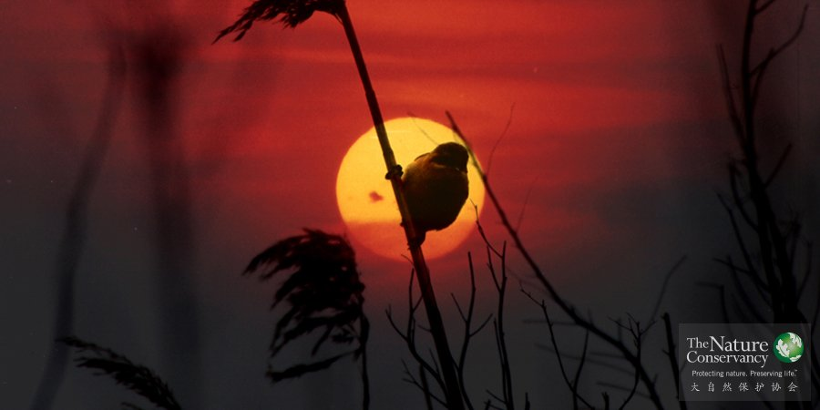

项目概览

崇明东滩湿地 - 攀雀日落®TNC
背景
健康的湿地生态系统是生态安全体系的重要组成部分，也是经济社会可持续发展的重要基础。但在人类活动的长期影响下，特别是近20年来城市快速扩张，大量挤占湿地，使湿地不断受到围垦、污染和淤积的威胁，湿地面积日益缩小，生态遭到破坏，生物多样性降低。
目标
TNC的湿地项目以加强湿地保护及合理利用为重要内容，为长江流域的生态安全维护、高原湿地的保护与利用、国家天然湿地公园的建设以及河口海岸湿地的管理和保护起到示范作用。
国家湿地公园建设
湿地公园是具有物种及栖息地保护功能和生态旅游、环境教育功能的湿地景观区域，是湿地保护体系的主要组成部分。针对当前湿地保护与开发利用之间的矛盾，在滇西北开展湿地公园建设项目，能有效保护生物多样性，引导该区由地理、生物、人类社会构建的复合系统走向互利共存，促进区域经济社会的可持续发展。目前中国TNC已按照国家湿地公园申报程序，全面开展了丽江九十九龙潭国家湿地公园的申报工作，并对剑川剑湖申报国家湿地公园给予了技术支持。
拉市海湿地管理数字化平台
拉市海湿地以中华秋沙鸭（Mergus squamatus）和黑鹳（Ciconia nigra）等国家I、II级重点保护野生动物和高原湿地生态系统为保护对象，拉市海湿地孕育着丰富的生物多样性，是云南第一个以湿地命名的省级湿地自然保护区，也是国际重要湿地。
目前无序旅游开发和不断增加的游客数量极大地威胁到拉市海湿地的保护，保护区湿地生态环境受到干扰和破坏，特有种——海菜花群落等水生植物分布面积明显下降，进而对鸟类构成了威胁，尤其是涉禽类的栖息环境。 拉市海湿地管理数字化平台建设，旨在通过建立湿地环境和资源之间的数字化信息系统，实现各级保护部门对拉市海湿地多层次、全方位的动态监控和直观管理，提高湿地保护区管理水平，同时为全国保护区保护工作提供管理示范。已完成的拉市海湿地自然保护区管理计划，前期进行的拉市海湿地鸟类、鱼类、两栖爬行动物以及浮游动物和水生植被的详细调查，以及对湿地动、植物与湿地生境之间关系的系统分析和现状评价，为拉市海湿地合理管理以及数字化管理平台的实现提供了充分的支持。
崇明东滩鸟类国家级自然保护区
上海崇明东滩自然保护区位于亚太候鸟迁飞的重要通道，每年在崇明东滩湿地栖息或过境的鸟类超过200万只。这里也是鱼类洄游产卵的重要场所，拥有大面积的水域、潮间泥滩和丰富的海三棱瀌草，生物多样性极为丰富。崇明东滩是全球重要的生态敏感区和国际重要湿地。
但是近年来受自然和人为因素的综合影响，崇明东滩的湿地生境受到了以下的威胁：
（1）周边区域环境条件的快速变化；
（2）外来入侵物种-互花米草的蔓延；
（3）资源保护与利用的矛盾。
为了更好地发挥崇明东滩独特的生态作用，保护这片长江入海口的重要湿地。TNC与合作伙伴们一起，以TNC的保护行动规划（Conservation Action Plan，CAP）为工具，通过调查分析崇明东滩植被、底栖动物和水鸟等关键物种（类群）的时空分布和生活习性特征，以及研究分析崇明东滩湿地演变历史、现状及发展趋势，提出崇明东滩保护区区域范围与功能区划布局及其调整方案；随后，又在此基础上进行了崇明东滩保护区总体规划研究，为同类型自然保护区总体规划编制提供示范研究。
为了帮助保护地更好地应对气候变化带来的影响，TNC又启动了崇明东滩动态管理系统，帮助东滩管理人员进行鸟类迁徙、鸟类种群变化等多种监测，以此调整当地的保护策略。
崇明东滩位于中国经济之都上海，独特的地理位置使这里的环保教育宣传显得尤为重要。TNC邀请澳大利亚设计师，提出了崇明东滩环境教育中心概念规划设计方案，并对当地人员进行环保宣教方面的培训，以帮助更多公众了解崇明东滩，了解湿地生态系统对他们生活的重要作用。
更多信息，请下载《东滩湿地项目3年小册子》
1月
28
近日，一个堪称“霸王级”的寒潮席卷了几乎整个中国大陆，各地纷纷刷新历史同期最低温记录。来自中国TNC东滩项目的消息称，寒潮袭来，上海崇明东滩湿地水面大面积冻结，不少地方冰层厚达5厘米以上。作为数以万计候鸟的越冬地，东滩向以气候温和著称，而眼下，往日越冬水鸟云集、熙熙攘攘的景象被寂寥与凝固所取代。万里迢迢飞来此地越冬的鸟儿们遭遇挑战了！
10月
8
10月8日，全国政协副主席、科技部部长万钢、上海市政协副主席张恩迪等来到崇明东滩鸟类自然保护区调研。万钢副主席还来到大自然保护协会（TNC）在东滩的“归去来栖”项目点，参观了观鸟栈道、观鸟墙，并在观鸟屋听取了TNC项目负责人杨波博士的工作介绍。
昨天是第14个世界湿地日。上海市林业局公布的数据显示，本市共有湿地近32万公顷，其中面积在100公顷以上的湿地有27块。然而，由于滩涂大量围垦用于城市建设开发等原因，这些湿地的功能正迅速退化，一些湿地甚至完全消失。
2006年，加入TNC中国湿地项目，协助TNC中国湿地项目在云南拉市海和上海崇明东滩开展的湿地保护区保护规划和有效管理项目。现协助开展长江上游鱼类保护区和长江中游四大家鱼的保护和监测等项目活动，并负责TNC大河伙伴项目和农业部长渔委签署的“长江-密西西比河绿色合作伙伴”项目的协调和管理工作。曾多次参加TNC中国保护行动规划方法的培训，在保护对象选择和保护现状综合分析、保护对策制定和成果评估等方面具有经验，参与完成了上海崇明东滩鸟类保护区保护行动规划和长江上游鱼类保护区保护行动规划项目。 杨波博士，毕业于中国科学院东北地理与农业生态研究所，主修环境科学专业。